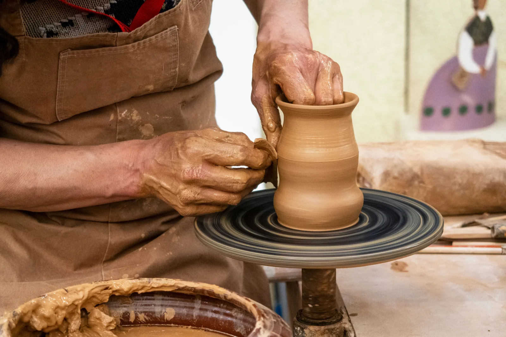
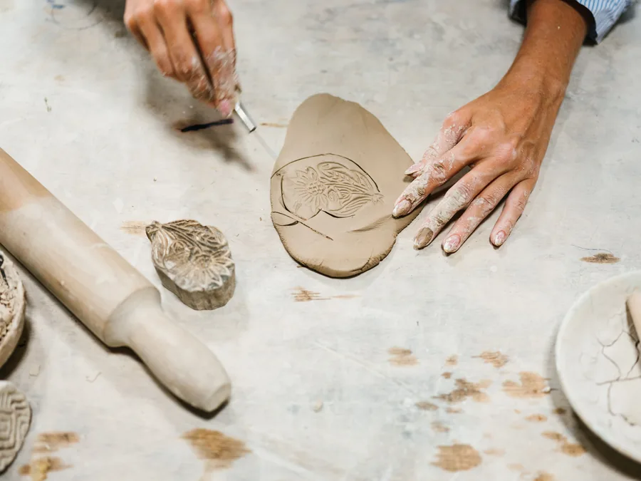
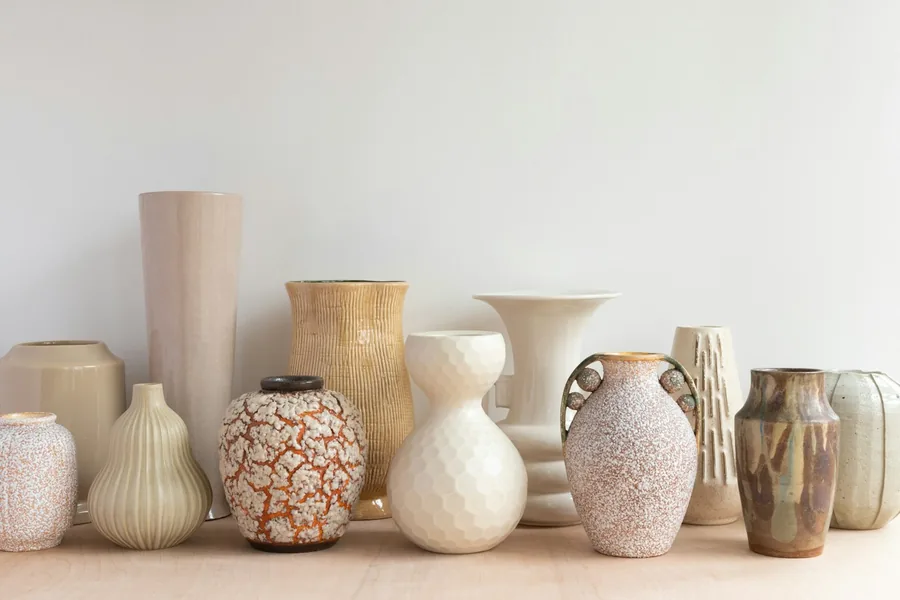

Modelagem manual
O contato direto com a argila. As mãos exploram a matéria e dão forma a uma peça, gesto por gesto.
Conversar sobre modelagemEscola e ateliê em Curitiba
Um espaço para criar, experimentar e descobrir a beleza da cerâmica.
Conhecer as aulas
O universo Crisol

Entre a terra e o fogo, existe um espaço para experimentar.
A Crisol se apresenta como um espaço de convivência e arte. Em Curitiba, a cerâmica reúne o aprendizado, a criação de peças e o encontro.
Uma pausa para tocar a matéria, observar suas possibilidades e descobrir o que as mãos podem fazer.
Entrar no universo Crisol
Duas formas de se aproximar da argila. Conheça as aulas divulgadas pela Crisol e converse sobre a experiência que procura.
O contato direto com a argila. As mãos exploram a matéria e dão forma a uma peça, gesto por gesto.
Conversar sobre modelagemMatéria em movimento. Um encontro entre o ritmo do torno, a atenção e o trabalho das mãos.
Conversar sobre o tornoDisponibilidade, valores e formato das aulas são combinados diretamente com o ateliê. Imagens de referência.
Uma seleção de referências para sentir a cerâmica de perto. Para conhecer as peças da Crisol, visite o perfil do ateliê.
Ver as peças reais da CrisolDa matéria à peça
Um olhar sobre as etapas gerais da cerâmica. Cada técnica e cada peça podem pedir um caminho diferente.
O ponto de partida. A escolha e a preparação da argila influenciam o trabalho e o resultado.
As mãos, as ferramentas ou o torno dão forma à matéria ainda maleável.
A peça perde umidade gradualmente. O tempo varia com a forma, a espessura e o ambiente.
O calor do forno transforma a argila. Conforme a técnica, esmaltação e novas queimas podem fazer parte do processo.
A forma permanece. Textura, cor e acabamento revelam as escolhas feitas ao longo do caminho.
A Crisol: Alquimia e Cerâmica é uma escola e ateliê em Curitiba. Modelagem manual, torno elétrico e venda de peças fazem parte do que o espaço divulga.
Para conhecer o ambiente, as pessoas e os trabalhos reais, acompanhe as publicações do ateliê.
Conhecer o ateliê no InstagramRua Barão de Guaraúna, 374
Alto da Glória, Curitiba, PR
Encontre a Crisol
em Curitiba.